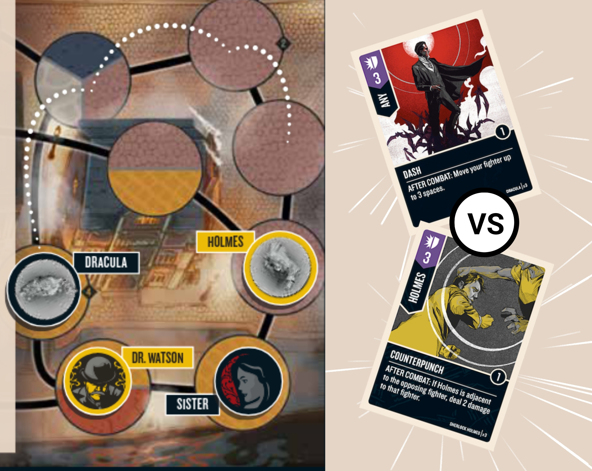

راهنمای جامع سیستم حمله، دفاع، مبارزان و تعیین برنده در بازی بر اساس قوانین رسمی
تمام کارکترهایی که در میدان نبرد دارید مبارز (Fighter) نامیده میشوند. مبارز اصلی شما قهرمان (Hero) است که با یک مینیاتور روی صفحه بازی نمایش داده میشود.
بقیه مبارزان شما یاران (Sidekicks) هستند که معمولاً با توکن روی صفحه نمایش داده میشوند. سلامت هر مبارز با Health Dial پیگیری میشود و هرگز نمیتواند از سلامت اولیه بیشتر شود. یاران بدون Health Dial تنها 1 جان دارند.
برای انجام اکشن حمله، ابتدا باید اعلام کنید کدام یک از مبارزان شما حمله را انجام میدهد (مبارز فعال). توجه: در صورتی که کارت حملهای در دست ندارید یا هیچ هدف معتبری در دسترس نیست، نمیتوانید اکشن حمله را انتخاب کنید.
هر مبارزی میتواند یک مبارز حریف را در فضای مجاور (Adjacent Space) هدف قرار دهد، صرف نظر از اینکه در چه منطقهای (Zone) قرار دارند.
بهعنوان مهاجم، باید یک کارت حمله (Attack یا Versatile) مجاز برای کارکتر خود از دستتان انتخاب کرده و به پشت روی میز بگذارید.
سپس مدافع میتواند (اختیاری است، مجبور نیست) یک کارت دفاع مجاز برای کارکتر هدف از دستش انتخاب کرده و به پشت قرار دهد.
بیشتر کارتها دارای افکتهایی با لیبل زمانی هستند. این افکتها اجباری هستند و ممکن است حتی به مبارز خودتان آسیب بزنند!
این شبیهساز تنها ارزش کارتها را محاسبه میکند.

شرلوک هولمز (مهاجم) در برابر دراکولا (مدافع)
هولمز کارت Counterpunch (ارزش ۳).
دراکولا کارت Dash (ارزش ۳).
ارزش برابر است (3 - 3 = 0)، بنابراین آسیب صفر است.
۱. دراکولا: تا ۳ خانه دور میشود.
۲. هولمز: "اگر مجاور هدف هستید ۲ آسیب بزنید". چون دراکولا دور شده، این افکت باطل میشود!
برخی کارتها به شرط "برنده شدن در نبرد" کار میکنند. نحوه تعیین برنده: